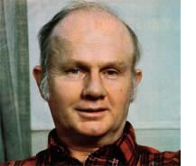
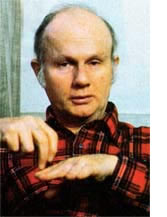
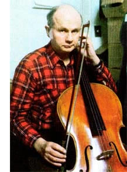

A little over ten years ago, the movement which aimed to make America's schools relevant, enjoyable, and truly useful for their students was at its peak. John. Holt was one of the leaders of that drive to make educational institutions more child-rather than teacher-centered. In fact, his books How Children Fail and How Children Learn practically sparked off the education reform movement all by themselves!
But that was ten years ago. Today, the attempt to establish "alternative", "open", or "free" schooling is all but dead. And, to tell the truth, most people have pretty much forgotten about that movement's emissary, John Holt.
MOTHER, however, is still very much aware of Mr. Holt . . . for two reasons. For one thing, the irrepressible New Englander won't let us forget him! John's a dedicated reader of this magazine, and he frequently writes us with suggestions, praise, and candid criticism.
More important, though, the one-time schoolteacher has not abandoned his efforts to help children learn and grow. Instead, John has taken a new approach . . . one that he sees as being the only logical response to the appallingly poor quality of public education and its innate resistance to change.
Namely, John Holt now devotes his energies to assisting people who want to help their youngsters learn at home . . . after pulling the children out of school altogether!
Why did a man who was at one time a conservative, traditional schoolteacher come to advocate keeping one's children out of school? How can parents successfully remove their youngsters from public school in the first place? And why does Mr. Holt think that readers of THE Mother Earth News should be especially interested in his ideas?
To get the answers to these and other questions, MOTHER sent staffer (and former schoolteacher) Pat Stone up to talk with John Holt in his tightly cluttered office in Boston, Massachusetts . . . where, in his scant spare time, John puts one of his central educational beliefs-that a learner should be responsible for her or his own learning-into practice by teaching himself to play the 4 cello. The following edited transcript of y their conversation deals with an admitedly radical approach to learning. Many readers will, no doubt, discover that they strongly disagree with Mr. Holt's thoughts. On the other hand, a few will probably be relieved to find that somebody out there feels as they do and is trying to help. No matter what your own response is, however, we're betting that John's words will set you to thinking about the state of education-and of children-in America today.
PLOWBOY: John, you've been a school teacher in three states . . . you've helped lead a nationwide effort for educational reform . . . and you're now at the center of a homeschooling network that almost resembles an underground railroad for children. Since you've put forth so much effort in ventures related to learning, I have to assume that you were trained as a professional educator.
HOLT: Absolutely not. I never formally studied education. I didn't even take any courses in psychology. To tell the truth, I didn't study any of the things that I'm now supposed to know something about .
PLOWBOY: Perhaps it was your own classroom experiences that sparked your interest in education. Where did you go to school?
HOLT: I won't answer that question.
PLOWBOY: You won't? Did I say some thing wrong?
HOLT: No, but I've come to believe that people's education is as much their private business as is their religion or politics. Let me just say that most of what I know I didn't learn in school, or in what people call "learning situations" . I don't owe anything to formal education for my love of language, reading, and music. I had those interests before I went to school, I lost a lot of them in such institutions, and I've managed to get them back since.
PLOWBOY: Wait a minute! You lost your love for learning while you were attending school?
HOLT: That's right. Take reading, for in stance. I taught myself to read when I was four or five years old. . . even though hardly anybody read aloud to me. I just looked at all the signs on the streets of Manhattan's East Side, where we were living . . . until, one day, I noticed a store that always had shirts in its windows and realized that the letters over that shop must have spelled "laundry"!
That was the first word I taught myself to recognize. I don't remember what the second word was, but I do recall that I liked to read, so I read lots of books that were too hard for me . . . which is the only way anybody ever gets to be a good reader. I even finished all of The Three Musketeers and other classic books of Alexandre Dumas-long, long books-in a single summer when I was about ten.
PLOWBOY: You m ust have been a good classroom student.
HOLT: Well, I knew how to "play the game", so I never had any difficulty with school. But I got bored with it as I got older, and-by the time I reached high school-I wouldn't read a book unless it had been assigned. I didn't start reading for my own pleasure again until eight or nine years after I got out of the Navy.
PLOWBOY: How could going to school have changed you so much?
HOLT: That's easy to figure out. It's a wellestablished principle that if you take somebody who's doing something for her or his own pleasure and offer some kind of outside reward for doing it-and let the person become accustomed to performing the task for that reward-then take the reward away, the individual will stop that activity. You can even train nursery school youngsters who love to draw pictures to stop drawing them, simply by giving them gold stars or some other little bonus for a couple of months . . . and then removing that artificial "motivation".
In fact, I think that our society expects schools to get students to the point where they do things only for outside rewards. People who perform tasks for their internal reasons are hard to control. Now, I don't think that teachers get up in the morning and say to themselves, "I'm going to go to school today and take away all those young people's internal motivations" . . . but that's exactly what often happens.
PLOWBOY: Did you find college any more rewarding than your early education?
HOLT: College was a very bad experience for me. I knew there was a "trick" to doing well in school, and it didn't seem to me that the trick was worth doing . . . but I was too scared to stop doing it! As far as I could see, though, college had no intrinsic purpose or connection to the world around me.
But then I went into the best learning community I have ever been a part of . . . on board a submarine, the U.S.S. Barbero.
PLOWBOY: You found a learning community on a submarine?
HOLT: Yes. It was during World War II, and I had a very unusual captain who believed in giving his youngest and most inexperienced officers-like me-a lot of responsibility right off the bat. This fellow realized that the best way for a person to learn to do something is to start doing it.
That was the first time anyone had ever put some real trust in me, and it was a very powerful educational experience. I was observant and asked a lot of questions, so before long I could do my share to help run a submarine on war patrol. I had an important task to do, and I did it well. The experience provided a great boost to my morale.
Maybe I'm kind of old-fashioned, but I don't think the currently popular "therapeutic" methods-which involve telling someone, "You're OK, you're really wonderful"-do much good. Tackling a job that seems worth doing, and doing it in a competent manner, is-to my way of thinking-the best way for a person to gain selfesteem.
PLOWBOY: What happened to you after the war?
HOLT: Well, I spent six years working for the World Federalists, an outfit that was trying to stop the proliferation of atomic weapons. Then I traveled around Europe, crewed my way back home on a former Coast Guard patrol boat, andafter that-went to visit my sister and her husband on their small cattle ranch near Taos, New Mexico. I didn't know what to do next . . . but I thought that maybe I'd become a farmer, and raise food in a manner that would help build the soil.
My sister suggested that-since I enjoyed children and they liked me-I might want to become a teacher. I didn't take to that idea at all, though. Oh, I wasn't particularly critical of schools or education, as I am now . . . teaching just didn't seem to me to be appealing work. But my sister persisted. She told me about the new Colorado Rocky Mountain School, where-it was planned-the faculty and students would build their own buildings and raise a lot of their food. She went on to suggest that, if I worked there, I might learn some of the skills I'd need in order to farm . . . and I'd get paid at the same time.
So I went to visit the school. I sat in on classes, answered students' questions, kicked a soccer ball around, and-by the end of the daydecided that the institution was a good place for me to work. I told the man who ran the school that I wanted a job. His reply could have been construed as discouraging: He said, "We'd be glad to have you, but we haven't got any place to put you . . . we haven't got any money to pay you . . . and we haven't got anything for you to do."
PLOWBOY: Yes, I can see how some folks just might take that as a rejection!
HOLT: Well I wasn't ready to be rejected. I responded, "As long as you get some kind of roof over my head, I don't much care where you put me. If you're feeding me, I can live without money for a while. And I think I can probably find something to do." The man laughed, threw up his hands, and told me to come ahead.
And to this day I believe that anyone who wants a chance to get started learning and doing serious work has only to make such an offer . . . one that-as they say- cant's be refused.
One of the foundations on which schools rest is the belief that children are mostly no damn good.
Anyway, I started out sleeping on a cot in a granary that was being converted to an infirmary, and working as the breakfast cook, but I eventually became a fully paid staff member. On the whole, I was a perfectly conventional schoolmaster . . . who gave the high-school-aged students lots of tests and flunked my pupils right and left. The only difference between me and the average teacher was that-because I hadn't taken any education courses-I didn't know all the alibis that conventionally trained instructors use ... excuses which imply that something's wrong with students who don't learn. I thought, if you can imagine such a simple-minded idea, that if my pupils weren't grasping their lessons, it was my responsibility to figure out a way to explain the subject so that they would understand it!
Well, it took me four years to discover that an awful lot of the youngsters did poorly in school because they expected to do poorly. So I decided to try working with younger children. . . I thought maybe I could reach girls and boys before they got into a defeatist frame of mind.
At that point I moved to Cambridge, Massachusetts and began working in the fifth grade class of a man who-like me -wanted to figure out why many children don't learn well. The class was part of a very selective private school. In fact, the students' parents were the elite of the area's intellectual community, and all-of the pupils had scored above 120 on I.Q. tests. Strangely enough, though, most of these children acted "dumb" in class. Many of my fifth graders couldn't add or subtract . . . although-back in second grade-the same students had passed all their addition and subtraction tests with ease!
Clearly the learning wasn't taking hold. So instead of giving more and more drills and testsas many of the other teachers were doing-my friend and I tried to find ways to get the children actually think ing about math.
This approach was so controversial that the institution finally got rid of me, and I started teaching in my own classroom at another school. Now I had, since becoming involved in education, written many letters about what I was observing in schools, and a friend of mine suggested that I try to put the letters in a book. Pitman Publishing Company was interested in the idea, and eventually printed my first book, How Children Fail.
PLOWBOY: What message did you try to convey with How Children Fail?
HOLT: To put it simply, I pointed out that children do poorly in school because they're bored with the meaningless work . . . scared of being punished or humiliated . . . and confused by the fact that most teaching progresses from abstract concepts to concrete examples instead of-as would be more sensiblethe other way around. In essence I'd realized, from observing and teaching, that school is a place where children learn to be stupid!
Most all youngsters are-by naturesmart, curious, and eager to learn. In fact-as I pointed out in my second book, How Children Learnbabies are such active, skillful seekers of knowledge that they learn more in the first five years of their lives than most older folks ever do in ten!
PLOWBOY: Did you propose any reforms that you felt would help children learn?
HOLT: I suggested we simply provide young people with schools where there are a lot of interesting things to look at and work with . . . but that we let the children learn in their own ways. If they have questions, answer the questions. If they want to know where to look for something, show them where to look.
PLOWBOY: In other words, you feel that youngsters should choose what to learn rather than having the sequence or path of instruction determined for them. That idea represents a 180° turn from traditional education.
HOLT: It certainly does, but it works: Students who are placed in an environment where they feel safe to explore and receive help when they need it will do fine. And I thought, at the time, that once I and others-like Jim Herndon, who wrote How to Survive in Your Native s Land . . . and George Dennison, the author of The Lives of Childrenshowed enough people that fact, then surely everyone would want to try the "new" way of teaching. That's not what happened, of course.
PLOWBOY: Weren't there lots of alterna t ive programs and open schools formed at that time?
HOLT: True, similar ideas did become fashionable for a while. But-and it took me years to figure out this "but"-most of this country's so-called innovative education projects, and there were never very many for all the talk, were begun solely to get some of the money the U.S. government was offering for such programs. When that federal money ran out, the programs stopped.
And even then, 99% of our nation's schoolchildren went right on filling out workbooks, just as they always had.
PLOWBOY: Wasn't there a groundswell of interest in truly alternative private schools, though?
HOLT: Oh, a few such places sprang up. But if you were to guess that, at the peak of the socalled educational reform movement, there were 1,000 small alternative schools with an average of 50 students each-and that's a generous estimate, by the way-then you could conclude that a total of about 50,000 children were enrolled in private alternative programs. But the school age population in the United States was some 30 or 40 million children! Compared to that massive figure, 50,000 youngsters is just a drop in the bucket.
PLOWBOY: Weren't you optimistic about such schools at the time?
HOLT: Oh yes, I was saying, "Here comes the wave of the future! Everybody join the parade!" The truth, though, was that all of us reformers went through a mighty big mountain of labor to produce -in effect-a small, dried up, wizened mouse.
PLOWBOY: But if child-initiated learning really works, why did a movement advocating that approach fail?
HOLT: Well, the innovators themselves were partly at fault. Some of us actually knew more about what we were against that what we were for . . . a few were trying to work out hangups about their own childhoods . . . and many of us thought of open education as a "secret" motivating device that could be used to help children learn the same old school curriculum.
But failures on the part of some innovators didn't really kill the alternative education movement.
PLOWBOY: What did?
HOLT: It was doomed from the start, simply because nobody really wanted to make the schools better. You can't believe how much I hated facing that truth. I started out believing that most teachers were potential allies whogiven the chance to really help students learnwould jump at the opportunity. But then I'd talk to administrators arid teachers in alternative public school programs, and find out that their co-workers were treating them like pariahs. I know of teachers who became involved in an Albuquerque, New Mexico alternative education project, as an example, whose former colleagues wouldn't play golf, drink beer, or even talk with them anymore!
And the teachers who didn't want improved schools were as sore as hell about the experiments that were going on. Of course, even those folks wanted some changes . . . like having fewer children in class, and less paper work-and more money-for teachers. But they also felt that the basic educational system-"You students do what I want, or 'POW!' ' was perfectly fine.
There wasn't any strong pressure for change coming from outside the schools, either. Why? I'm afraid the plain truth is that most Americans don't really like children . . . even their own! Adults don't trust youngsters, and school is an institutionalized expression of that fact. To put it another way, one of the foundation stones on which schools rest is a great big rock that says children are mostly no damn good.
PLOWBOY: Do you really believe that most adults-even parents-actually do not dike children?
HOLT: I know that's true . . . I've spent a lot of time observing how society treats children. Look, I could give you a tenhour interview entirely on the subject of adults' feelings toward young people, but let me tell you just one tiny example.
I recently read a construction design manual that was full of surveys showing buyers' preferences concerning townhouses and clustered housing. And the number-one concern of potential owners was that they not live in a place where they could hear the sounds of children playing. They weren't talking about the noises of youngsters smashing bottles or having gang fights with zip guns, mind you . . . no, the buyers queried were objecting simply to the sounds of children having a good time together.
PLOWBOY: So you decided that reforming public schools was an impossibility. What did you do next?
HOLT: I began advising people who were dissatisfied with traditional education to leave the public system and start their own educational centers. But the almost infinite hassles of forming and running a full-fledged school-and especially the necessary and neverending search for funds-killed most such efforts.
Finally, I realized that a parent whose objective was to establish a decent learning situation for her or his child might avoid all the fights and struggles involved in trying to reform the public school-or to start one from scratchby moving directly to the objective. How? Just teach the child at home.
PLOWBOY: Is that all you mean by the term "home schooling"?
HOLT: Well, in its strictest meaning the phrase simply describes children learning at homeand in the surrounding world-in ways that they and their parents determine. In some instances, the parents have rather oldfashioned ideas and end up scheduling their programs sort of like miniature schools. On the whole, though, people soon tend to get away from such restrictive approaches . . . because they find-from experience -that children learn better if they direct their own educations.
PLOWBOY: Can you expand on your con cept of what home schooling should be?
HOLT: I think that learning is not the result of teaching, but of the curiosity and activity of the learner. A teacher's intervention in this process should be mostly to provide the learner with access to the various kinds of places, people, experiences, tools, and books that will correspond with that student's interests . . . answer questions when they're asked . . . and demonstrate physical skills.
I also feel that learning is not an activity that's separate from the rest of life. People learn best when they're involved with doing real and valuable work, which requires skill and judgment.
These concepts are my basic philosophy of learning-and are mirrored in my magazine, Growing Without Schooling but I'm in favor of having people teach their children at home and don't insist that they have my reasons for doing it or even follow my methods. As a result, the readers of Growing Without Schooling, or G WS, include a variety of people . . . ranging from leftist counterculturists to right-wing fundamentalists.
PLOWBOY: Is the home-schooling movement entirely a negative reaction against established educational systems?
HOLT: No, indeed . . . because it has such incredible positive benefits for children. True, people often start teaching their children at home because they see bad things happening to the youngsters at school. Many such parents, though, find that their children soon become happier, nicer, and more inquisitive human beings than they were when enrolled in educational institutions.
Home schooling can be beneficial to the entire family, too. A lot of people write me to say that-when their children were sent off to school each day-the parents almost felt their families were being broken up. For such people, home schooling is a family-saving movement.
PLOWBOY: But aren't a lot of parents nervous about trying to educate their youngsters themselves? I can imagine someone thinking, "I don't know how to teach! "
HOLT: I run across that fear all the time, and in people with Ph.D.'s just as often as in Joe Blow from Kokomo. I tell such folks that teaching is not a mystery . . . anybody who knows something can help anybody .else who wants to learn it. In fact, what passes for official "teacher training" often makes people much less effective educators than they would have been if they hadn't had it.
PLOWBOY: But what if you don't know a subject? Suppose the child gets interested in something that's over your head . . . like, possibly, physics?
HOLT: The youngster doesn't have to learn physics from you . . . there are plenty of available books on the subject. Besides that, lots of other people in the world know something about physics. If a 12-year-old, say, types a letter to somebody-and, by the way, knowing how to touch-type is a valuable skill for children to possess, and I've never in my life known a youngster who's had access to an electric typewriter who didn't learn to use itand if the letter is neatly typed, asks a question, and doesn't admit that the writer is 12 years old, the chances are that the child will get an answer
PLOWBOY: But surely some people are apprehensive about educating their children despite such assurances.
HOLT: Yes, they are. And I try to help them as much as I can by publishing advice from-and the experiences of-other home schoolers in G WS. At some point, though, a parent has to take a leap of faith and get started in spite of her or his lack of confidence. Those who do so discover that teaching is a lot easier and more fun than they thought.
PLOWBOY: But how can people find the time to teach their children for six hours a day, as the schools do?
HOLT: Name a school that teaches children for six hours a day! Observers who've used stop watches to time classes have shown that about 35 minutes out of every classroom hour are devoted simply to maneuvering around and getting ready to work. And the rest of the time consists mainly of either teacher demonstration or repetitive drill in a workbook. I know from my own schooling-and I was a good student in good schools-that I rarely got 15 minutes of real teaching a day.
Furthermore, the schools themselves admit this by their own actions. When a sick or injured pupil has to stay home for a while, the youngster's school will often send a tutor around to keep the child caught up in her or his schoolwork. And how much time does a tutor spend with one youngster? From as little as an hour and a half to a top figure of five hours a week!
PLOWBOY: Have you considered that, nowadays, few families can even afford to keep a parent at home all day?
HOLT: The question of how working parents can raise a home-schooled child is important, but you should realize that the problem is basically a custodial one . . . because the parents can easily provide enough adult help in the evenings to keep a child's learning progressing. When I meet people who are disturbed by the "day care" dilemma, I say, "If you have a very young child, you'll have to find someone-like one of your own parents, or a livein baby sitter-to be at home while you're both at work. But you ought to be able to get your child to the point where, at age eight, the youngster can occupy her- or himself perfectly happily and usefully during those hours of the day when you're away."
PLOWBOY: You would recommend leaving a child alone for eight or nine hours every day?
HOLT: It doesn't have to be that long a time. Remember, once school hours are over, the youngster will no longer be an "outlaw" and can go to a friend's house, the local library, etc. In addition, you could probably find an older person or hire a student to spend a couple of hours doing something interesting with your child to give the youngster a break in the day. But even leaving a child to her or his own activities for the full working day is better than sending the youngster off to a destructive school.
PLOWBOY: What about providing a child with the chance to learn social skills? Don't parents ever worry that a homeschooled boy or girl may not have the chance to make friends?
HOLT: Most of the children I know who are learning at home do have social lives. They see peers after school and on weekends, and have the chance to experience friendships, arguments, and all the ups and downs of true social life. When youngsters live a long, long way from anyone their own age, groups of parents can make arrangements to bring their children together to solve this problem. In fact, we print a directory of home schoolers in GWS, partly to help such folks get in touch with each other.
More important, though, I think the social life of most schools is so competitive and snobbish and status-oriented, and so full of meanness and teasing and ganging up, that-even if I didn't have any other reason for wanting to keep a child out of school-that very "society" would be reason enough to educate the youngster at home! I don't think schools teach young people anything about friendship, intimacy, and trust.
For years and years-since long before I got into home schooling-I've seen evidence of the harmful desocializing effects schools have on children. Even my sister, who certainly is not an educational critic, told me that her five-yearold never knew how to do anything really mean, sneaky, or dishonest until after the tot had gone to school.
PLOWBOY: Suppose the children want to go back to school when they get older. Do they have peer problems then?
HOLT: Actually, they'll be in better shape for coping with school, because they're going there by choice and for their own reasons. It's like the difference between a prisoner in jail and a sociologist who goes in to study prison conditions. Both people are in the same building, but they're in very different frames of mind.
PLOWBOY: What other worries do parents express about the consequences of home schooling?
HOLT: Some are concerned about whether their children will be able to get into college or land a good job without an "official" diploma. However, anyone can take the high school equivalency exam to earn a secondary diploma . . . and anyone can get into college-a good college -if she or he scores well on the Scholastic Aptitude Test.
PLOWBOY: John, we've talked a lot about the benefits of home schooling, but how can a parent actually try it? How do people get around our country's compulsory education laws?
HOLT: Well, I first thought all you'd have to do to be able to home-school a youngster would be to tell the public school authorities that you were going to send your children to private school . . . fill
out the correct forms . . . and then-as far as the school system was concerned -let your child just "disappear". That approach doesn't often work, though, because neighbors or relatives are likely to blow the whistle on you by calling up the school and saying, "Hey! I know a child who's playing hooky! " Still, if you're surrounded by more or less friendly people, the "sneaking out" strategy will work. PLOWBOY: What are some other possible approaches?
HOLT: In many states you may be able to register your own home as a private school . . . and in California you can legally educate your own child if you have a teacher's certificate. People can also sometimes enroll their children in a private school-the Santa Fe Community School in New Mexico is one examplewhich is willing to supervise a home study program. In such a case, the child is offi cially a student of the school but doesn't physically attend its classes.
On the other hand, some 32 states have laws which say that your children don't have to attend school if they receive what's called "equivalent instruction". Such states usually let the local school boards decide what programs qualify as r an equivalent of public school education.
There are even some states where you can legally teach your children at home, even if you live more than two miles away °from both the nearest school and from a road on which the school district furnishes transportation.
I think that learning is not the result of teaching, but of the curiosity and activity of the learner.
Finally, there's always the possibility a of simply arriving at an arrangement 7 with the school that will allow you to teach your child at home . . . using either materials provided by the teachers or recognized texts like those in the Calvert or the Home Study Institute's correspondence programs. Of course, each parent will have to figure out which of the various tactics for getting her or his children out of public school will work best.
PLOWBOY: How does somebody decide ' which tactic to try? It would, I can imagine, be important to pick the right one.
HOLT: That's a very difficult decision to make, because the best approach will vary from district to district, and it's often hard to know what a particular school
em is going to do until you actually test it out. I tell some people that-before they decide about whether to take an open, aboveboard route or a secret one - they should feel out the local school board and see how friendly, or distant, the women and men who run that particular education system seem to be. Of course, some folks are perfectly willing to confront the school system in court if that's the only choice left to them.
PLOWBOY: Do they often win?
HOLT: Yes and no . . . the legal situation is really quite cloudy. On the one hand, courts have said that compulsory school attendance laws are constitutionally valid. On the other hand, the Supreme Court has declared-in cases like Pierce vs. the Society of Sisters-that the state may not compel all children to be educated in the same way, or even in the same place.
On the whole, the trend of recent decisions has been in favor of parents. Soin most jurisdictions-a family that prepares its education plan carefully, cites enough relevant court cases, and supports its presentation with good reasons for home schooling and backup material from so-called education authorities . . . would have a four out of five, or maybe even nine out of ten, chance of winning the case either in the local court or on appeal.
PLOWBOY: But what about a familyliving in an area with an uncooperative school boardthat doesn't want to fight in court?
HOLT: Often, if you prepare your initial proposal to the local school authorities as if you were presenting a legal brief, your
Home schooling is part of our country-wide trywide movement toward selfsufficiency, smallscale activities, and indep en dence., opponents will back down right then and there. Still, if the school personnel are absolutely determined to make trouble for you, they'll do so. And I've told people who can't risk a court fight-or would obviously lose one where they live-that if moving is an option for them, they ought to think about doing that.
PLOWBOY: How does one learn enough about schooling laws and court cases to prepare a convincing legal argument?
HOLT: That's one of the services Growing Without Schooling provides. GWS is, among other things, a miniature law review-a reference book coming out a piece at a timethat is packed with legal advice and information concerning recent court cases.
The magazine also describes materials and ideas that are useful to home schoolers, reports on the experiences of people who are already teaching their children at home, and provides a directory of others who can be contacted for advice. There's no question in my mind that many people find GWS tremendously valuable. In fact, hundreds of people have written to say that they would never have had the nerve to home-school their children if they hadn't had G WS.
And as the magazine-and the movement-gets bigger, I hope to add lists of adult work places where children can visit and help out . . . families who are willing to be part of an exchange system so that their youngsters can visit in different areas . . . and school districts that are cooperating with home schoolers.
PLOWBOY: Just how big is the homeschooling movement right now?
HOLT: Nobody knows, but I'd guess somewhere close to 10,000 families.
PLOWBOY: And you expect to see it grow?
HOLT: I'm not expecting large numbers right away. After all, when you're blazing a trail, you're necessarily going to attract small numbers of people . . . but the more folks who walk a trail, the easier the path becomes to negotiate. For now, I'm hoping that in three years school districts will start seeing that they should cooperate with the home schoolers so that we can move out of the "combat phase" that we're in now.
PLOWBOY: You think that public schools might actually cooperate?
HOLT: Oh, yes . . . we're beginning to see evidence of such a trend now. For example, I know of several school districts in Massachusetts that are saying to homeschooling parents, "If your children want to come to school and use the library and gym, or take part in a play . . . why, they're welcome to do so."
And why not? Home schooling is not a threat that's going to overturn the whole school system. Most people are never going to try it . . . they don't like their children enough to want them around all of the time.
The truth is the home-schooling movement is good for the schools. We provide, among other things, extremely important educational research. Besides that, if-in the long runschools are going to have a future, they will eventually have to function as learning and activity centers which more and more people come to voluntarily . . . and the sooner our institutions begin to move in such a direction, and some community schools already are moving that way, the better off they'll be.
Home schooling is good for society as a whole, too. Most young people come out of high school today with feelings of alienation, selfhatred, bottled-up anger, and the sense that life is useless. Such emotions constitute a largescale and potentially dangerous social problem. I don't entirely blame the schools for this situation, of course, but they have pretty well demonstrated that they can't change it . . . and I don't expect home-schooled teenagers-since they've grown up in contact with serious adults who take young people seriously-to have the same problems.
PLOWBOY: So all in all, you're optimistic that the home-schooling movement will continue to grow?
HOLT: Barring the social changes that would come with a major war, yes. After all, home schooling is part of our countrywide movement toward increased self-sufficiency, smaller-scale activities, and local independence. THE MOTHER! EARTH NEWS is a major voice for this movement, of course, so I'm really hoping that a lot of MOTHER-readers will see us as kindred spirits.
In fact, I'd like to say something directly to MOTHER's readers, if I may.
PLOWBOY: That's fine with me. Why don't you just go right ahead and wrap up this interview yourself?
HOLT: OK. Many of you folks who read this magazine believe-and with good reason-that government interferes too much in our lives. Well, I think that there is no place where this interference is less justified, more harmful, and more easily resisted than in the education of children. So it would seem to me that those who want to minimize the power the government has over their lives would find the area of their youngsters' learning to j be the first place where they'd want to work toward that goal.
And I'd like to emphasize one last point very strongly. People, if you're smart enough to build your own home, design your own solar system, make your own fuel, redesign your car, raise your own food, and do all the things that many MOTHER-readers are doing. . . then you sure as hell are smart enough to teach your own children!
|
 STAFF PHOTO |
 STAFF PHOTO |
 STAFF PHOTO |